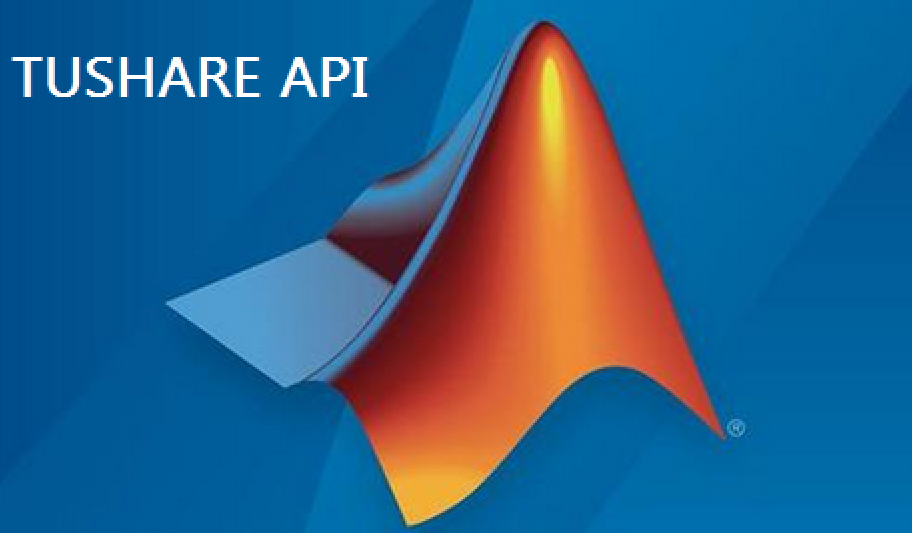
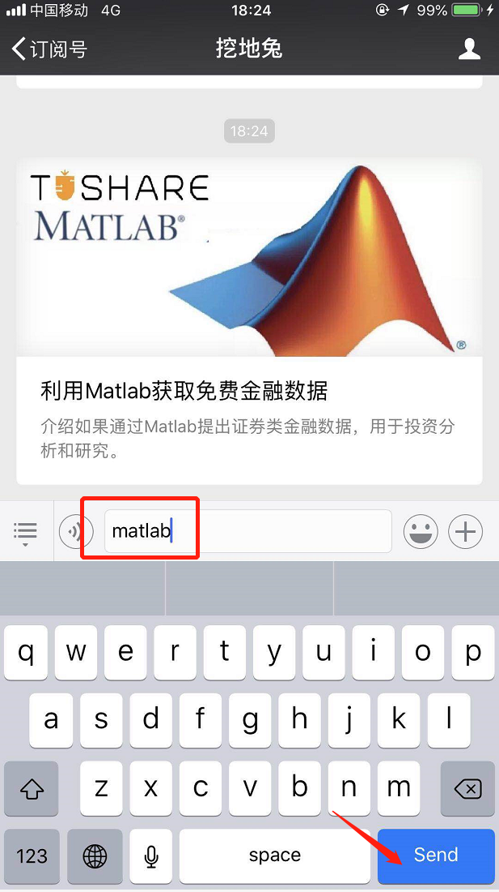
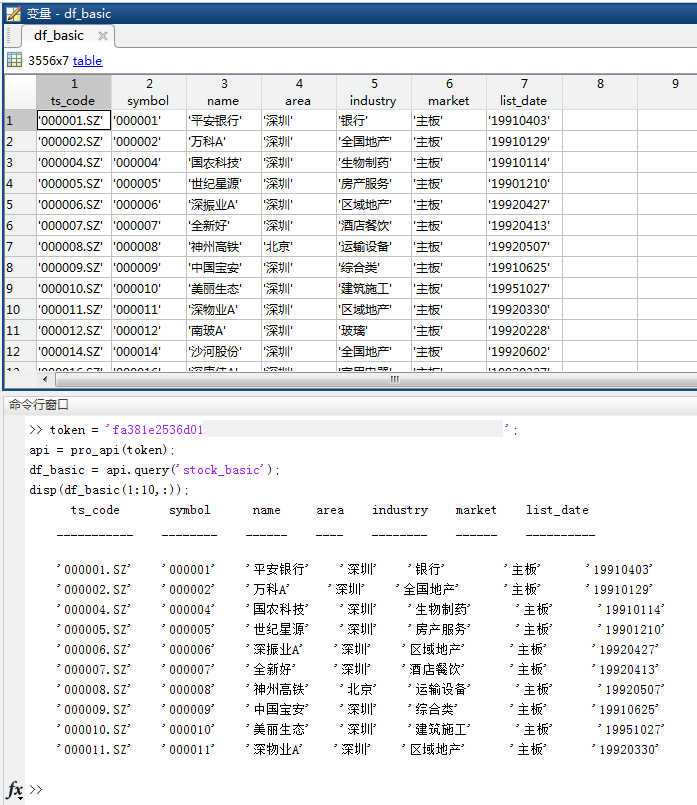
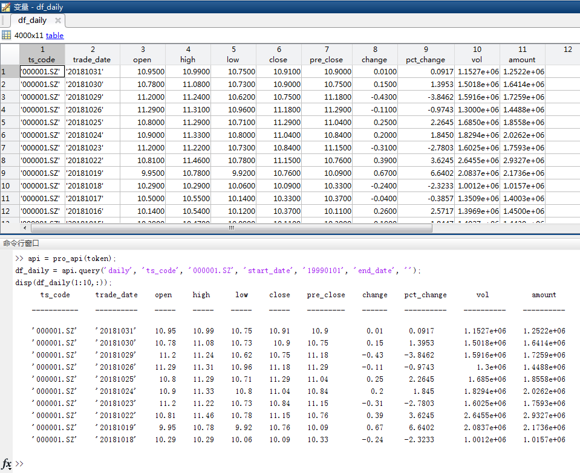
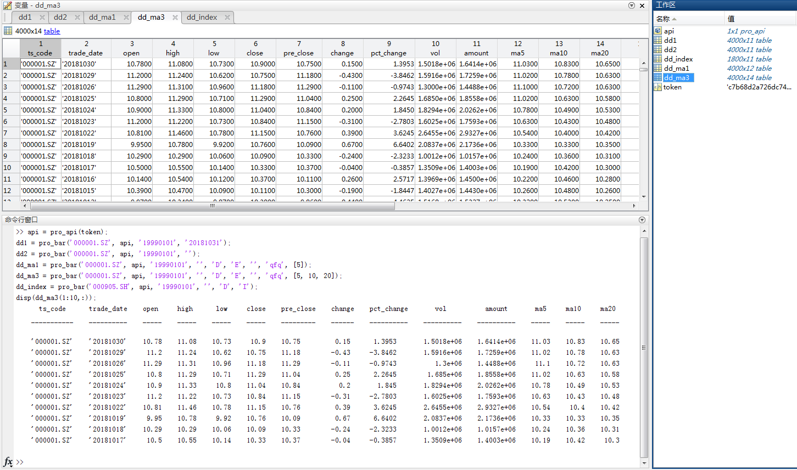

感谢Tushare社区小伙伴Lianrui Fu的努力，让Tushare的Matlab用户可以方便调取数据了。
对于不懂Matlab的小编来说，Lianrui提交的代码和文档简直完美，两个字概括：优秀！
所以，再次表达衷心谢意。
版本要求：Matlab需要2016b及以上版本
接口说明：可以用help pro_api和help pro_bar查看
demo程序：请参考tushare_pro_test.m文件
可通过以下方式获取：
1、下载地址
2、在“挖地兔”公众号里发送私信，关键字“matlab” ，可获得下载地址。

当前Matlab版本主要提供query接口（可获取股票列表、日线行情等Tushare公开的所有数据），以及通用行情接口pro_bar。
输出数据为matalb table数据类型，和pandas的DataFrame非常接近。调用失败时返回[]并显示相应原因。
常见原因：(1)token无效，(2)网络不正常，(3)Matlab版本过低，需2016b及以上，(4)参数输入有问题。
query说明
调用方式：
results = api.query(api,api_name,param_name1,param_1,param_name2, param_2, ...);
具体参数与python接口参数一致
获取股票列表的示例：
token = 'c75b7d8389a****************'; % replace your token here
api = pro_api(token);
df_basic = api.query('stock_basic');
disp(df_basic(1:10,:));

获取行情数据的示例：
token = 'c75b7d8389a****************'; % replace your token here
api = pro_api(token);
df_daily = api.query('daily', 'ts_code', '000001.SZ', 'start_date', '19990101', 'end_date', '');
disp(df_daily(1:10,:));

参数说明
不能少于4个，部分有默认值。
1、ts_code:证券代码，支持股票,ETF/LOF,期货/期权,港股,数字货币,如'000001.SZ','000905.SH'
2、start_date:开始日期 YYYYMMDD, 如'20181001'
3、end_date:结束日期 YYYYMMDD,''表示当前日期
4、freq:支持1/5/15/30/60分钟,周/月/季/年, 如'D' （分钟数据目前暂时未发布）
5、asset:证券类型 E:股票和交易所基金，I:沪深指数,C:数字货币,F:期货/期权/港股/中概美国/中证指数/国际指数,如'E'
6、market:市场代码,默认空
7、adj:复权类型,''不复权,'qfq':前复权,'hfq':后复权
8、ma:均线,支持自定义均线频度，如：ma5/ma10/ma20/ma60/maN,如[],5,[5,10],[5,10,20],有n个MA值，输出就会相应追加列，不足N天的均线值用NaN填充
8、factors因子数据，目前支持以下两种：
vr:量比,默认不返回，返回需指定：factor=['vr']
tor:换手率，默认不返回，返回需指定：factor=['tor']
以上两种都需要：factor=['vr', 'tor']
9、retry_count:网络重试次数，默认3
调用示例：
token = 'c75b7d8389a****************'; % replace your token here
api = pro_api(token);
dd1 = pro_bar('000001.SZ', api, '19990101', '20181031');
dd2 = pro_bar('000001.SZ', api, '19990101', '');
dd_ma1 = pro_bar('000001.SZ', api, '19990101', '', 'D', 'E', '', 'qfq', [5]);
dd_ma3 = pro_bar('000001.SZ', api, '19990101', '', 'D', 'E', '', 'qfq', [5, 10, 20]);
dd_index = pro_bar('000905.SH', api, '19990101', '', 'D', 'I');
disp(dd_ma3(1:10,:));

(1) Matlab版本必须得2016b及以上吗？
是的。
(2) 如何引用Tushare的matlab接口？
如果是在matlab_sdk目录下，可以直接调用。如果在其它目录下调用，可以添加matlab_sdk目录到Matlab的系统环境变量中。
addpath(‘D:/xxx/xxx/ matlab_sdk’)；%相对路径和绝对路径均可
(3) pro_bar所列参数都支持吗？
有的参数是预留的，后面会继续完善。具体见示例程序所示。
(4) 问题和建议反馈。
可以发邮件到 waditu@163.com
更多资料请关注“挖地兔”公众号：